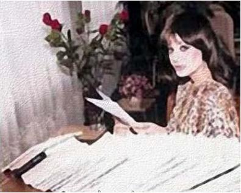

|
|

غاده السمان فریاد وجدان زن عرب
پنج شنبه27 اسفند 1388
ابراهیم یوسفی محله[*]- تلاش برای رهایی زنان از قید موانعی که موجبات عقب ماندگی و استثمار آنها را فراهم آورده با انقلاب فرانسه در سال 1789میلادی و تدوین منشور آن که بر حقوق آنان تاکید داشت ، آغاز شد.
این تلاش هادر آغاز عمدتا" رنگ و بوی حقوقی داشت و به نام موج اول جنبش فمینیستی معروف می باشد . تلاش در جهت احقاق حقوق زن و رفع تبعیض و ستم از طریق دستیابی به نهادهای قانونی از ویژگیهای این موج می باشد و در این میان در عرصه ادبیات می توان به دو نماینده شاخص این موج ژرژ ساند و ویرجینیا ولف اشاره کرد.
پس از وقوع جنگ های جهانی و ظهور پدیده های خشونت باری چون فاشیسم و استالینیسم که در روند این جنبش های رهایی بخش وقفه ای ایجاد کرده بود، موج دوم فمینیستی با ارزیابی مجدد در تلاش های گذشته بوجود آمد که برجسته ترین نماینده آن سیمون دوبوار می باشد.[1]
در این میان مشرق عربی دوران انتقالی آشفته ای را سپری می کرد . اکثر کشور کشورهای عربی از استقلال برخوردار شده بودند و جریان های فکری نوین در نتیجه تعامل با تمدن غربی در جامعه اشاعه پیدا کرده و نقش قابل توجهی را ایفا می نمودند. ترجمه بسیاری از تالیفات غربی به زبان عربی و انتشار آنها آثار غیرقابل انکاری برزندگی عربی گذارده بود.
در کشور سوریه نیز نویسندگان نوپای زن در عرصه ادبی به این مسئله می پرداختند . زنانی چون « کولیت خوری» « اُلفه الادلبی» و « وداد السکاکینی» با شجاعت و جدیت تمام در این عرصه وارد گردیدند . غاده السمان پس از آنها اولین زنی بود که موضوع مسایل زنان را در یک چهارچوب آشکار انقلابی مطرح نمود به گونه ای که از همان آغاز کار ، در دمشق به وی لقب پرجرئت ترین زن نویسنده عرب را دادند که همواره بهای سنگینی را برای آن می پرداخت. [2]
غاده السمان دختردکتر احمد السمان استاد و رئیس دانشگاه می باشد که بعدها وزیر آموزش سوریه گردید. لیسانس خود را در رشته ادبیات انگلیسی از دانشگاه دمشق سوریه گرفت و دوره فوق لیسانس خود را در دانشگاه آمریکایی بیروت ادامه داد و بالاخره دکترای خود را در رشته ادبیات در دانشگاه لندن به پایان رسانید .
نکته قابل توجه آنکه وی زمانی که تعلیم به طور نسبی مختص مردان بود به مدارج دانشگاهی بالایی دست یافت . زمانی که غاده السمان دوره لیسانس ادبیات انگلیسی را می گذرانید نسبت زنان در دانشگاه دمشق به مردان 16 درصد بود .
موقعیت های سفری بوجود آمده برای وی به اقصی نقاط دنیا و آشنایی او با هنرمندان و نویسندگان مختلف موجب گردید که افکار وی متحول گردیده و از نوعی استقلال فکری برخوردار گردد.
غاده السمان در مورد انگیزه خود برای نویسندگی چنین می گوید : « اگر چاره ای از مرگ محتوم نیست این ما را بر این وامی دارد که دوبار نمیریم . من با نوشتن احساس وجود می کنم من می نویسم، پس هستم .»
علیرغم اینکه او زاده سوریه و تربیت یافته محیط آنست اما در دیدگاه وی مشکل زن از حدود زبان و فرهنگ و تمدن خاص خارج می باشد و چهارچوبی جهانی دارد. با وجود اینکه او در عرصه نویسندگی از جایگاه والایی برخوردار بود ولی در عمل با مشکلات زیادی مواجه شد. هنگام ترک دمشق در سال 1964 میلادی اینگونه می نویسد :
« درحال حاضر در این دنیای تندخو به تنهایی ایستاده ام و تمامی قوای هم پیمان در مقابلم ایستاده اند و مرا و افکار مرا موجب فاسد شدن نسل و در عین حال تحریک آنها در جهت خودشناسی آنها به دور از افکار متحجرانه می دانند .» [3]
در آن هنگام تعدادی از کتابهای او مصادره گردید و یا در برخی کشورهای عربی ممنوع اعلام شد به گونه ای که در برخی کشورها کتابهایش به طور قاچاقی به فروش می رسید و در عین حال در برخی جاها معدوم می گردید.
جالب آنکه برخی دولتهای عربی با وجود ممنوعیت کتابهای وی از او به دلایل خاص دعوت می کردند به گونه ای که او با حالت تمسخر از خود سئوال می کند : « آیا اندیشه ام ممنوع است و وجودم مجاز ؟ »[4]
با تمامی این اوصاف ، نوشته های او در ابعاد وسیع به خوانندگان رسیده و به زبانهای مختلف دنیا ترجمه گردیده و تعدادی از آنها جایزه برخی محافل ادبی را دریافت کرده است.
غاده السمان در مورد تاثیرش از ادبیات جهان می گوید : « من بیشتر از ادبیات انگلیسی متاثر شده ام و نمی توانم اعجابم را از ویرجینیا ولف ، فالکنر، سیمون دوبووار ، داستایوفسکی، جیمز جویس و فلوبر مخفی کنم . از طرف دیگر ریشه های اسلامی خود را هم نمی توانم نادیده بگیرم . پدرم مرا با مطالعه سنت های عربی اغناء کرد.[5]
جنگ از فاکتورهایی است که تاثیر زیادی بر او گذاشته است و نقطه عطفی در تغییر و تحولات فکری وی به شمار می رود . جنگ های 1948 فلسطین ، 1967 رمضان و جنگ 1973 و جنگ های لبنان از جمله این جنگ های می باشند که موضوع اکثر آثار او را تشکیل می دهند .
غاده السمان ضمن رد انتساب خود به هر گونه تشکل سیاسی خود را منتسب به جبهه نفی * می داند ، نفی اکثر حکومت های عربی معاصر که تا به امروز آنها را موجب محرومیت اعراب از حقوقشان و گمراه نمودن افکار عمومی و تحقیر آنها می داند . او بی مسئولیتی و بی توجهی و دوگانگی مسئولان را در قبال جنگ لبنان محکوم نموده و می گوید : « مسئولیت برای آنها وسیله ای برای ثروت مندی و قدرت است نه خدمت به مردم . آنچه که از حوادث و اتفاقات لبنان می فهمند آنست که مصالح آنان را به خطر نیافکند . ناسیونالیسم عربی وسیله ای برای سوء استفاده آنان به شمار می رود. [6]
در اندیشه غاده السمان محدود نمودن مشکل زن به وجود فرد ظالمی به نام مرد و فرد مظلومی به نام زن مردود است . به نظر وی « اشتباهی که اکثر انجمن ها و نویسندگان زن مرتکب شده اند آنست که فکر می کنند مبارزه آنها ضد جنس مرد می باشد نه ضد عقب مانگی اجتماعی » « عوامل دیگری چون عوامل اجتماعی ، تاریخی ، اقتصادی و ایدئولوژیک وجود دارند که باید آنها را نیز به حساب آورد. »[7]

« مشکل زن عربی آنست که از پایمال شدن حقوق اقتصادی ، فرهنگی ، سیاسی و اجتماعی خود رنج می برد . اما باید توجه داشت که این مشکلات همچنین مشکلات مرد عربی نیز هستند. »
« غیرممکن است که یک فرد چه زن و چه مرد بتوانند در یک جامعه به دور از عدالت آزاد باشند. البته زن علاوه بر قیود عام مذکور، قیود خاص دیگری را نیز با خود به همراه دارد.
وی از زن می خواهد به جای دنباله روی از مرد به او کمک کند . « ای زنان دنیا ، دوست بدارید . مرد موجود زیبایی است و مثل ما بی نواست . به جای تقلید و پیروی از او به او کمک کنید .» « مرد تنها عاملی نیست که به زن ظلم می کند بلکه این عقب ماندگی ، استعمار و ......... است که بر هر دو ستم روا می دارند . ضروری است که با یک همبستگی آگاهانه ، زن و مرد علیه این دشمن واقعی مشترکشان برخیزند. » [8]
اگر بخواهیم اندیشه غاده السمان در بررسی سیر زندگانی یک زن از دوران کودکی تا ورود در عرصه اجتماعی را مورد توجه قرار دهیم ، ناچار باید در سه عرصه خانواده ، زندگی زناشویی و زندگی اجتماعی و سیاسی اندیشه های او را مطرح نمائیم :
1- نهاد خانواده :
نهاد خانواده در مرحله اول به عنوان متولی تربیت دختران و در مرحله بعد به عنوان ایجاد کننده موانع و محدودیت ها در زندگانی دختران مورد توجه غاده السمان قرار می گیرد . « اعتقاد دارم که خانواده عربی نهاد زیبای رشک برانگیزی است ، لکن باید آن را به سمت یک نهاد دمکراتیک سوق داد . فرزندان را باید از بند رویاهای کودکی هایمان رهاسازیم و بگذاریم که خودشان ترسهایشان را بسازند و این امر زمانی میسر خواهد بود که والدین در مرحله اول حس وابستگی و تعلق به کشور و جامعه را در وجود آنها ایجاد نمایند. [9]
تربیت کودک از اهمیت خاصی نزد غاده السمان برخوردار است و به نظر وی زنانی که دوران کودکی خوبی را پشت سرگذاشته اند در آینده در مواجهه با مشکلات زندگی توانا خواهند بود.
اکثر کودکان در آینده ای نزدیک ، واقعیات دنیا را خواهند فهمید پس چرا باید آنان را محبوس رویاهای زیبای دروغین خود نمود و بدین گونه از آنها افرادی خودخواه، غیرطبیعی و بی مسئولیت تحویل جامعه داد .داستان های غاده روایت زندگی دخترانی است که قربانی نقص تربیت خانوادگی گشته اند.
« یاسمینه » قهرمان داستان « بیروت 75 » که خانواده او را در بند شدیدترین قیود و به دور از واقعیات جامعه نگه داشته اند ، در اولین فرصت و مجال رهایی از آن قیود ، خود را در معرض آن چیزهایی قرار می دهد که سالها از آن ممنوع بوده است .
اما نکته مهمی که غاده بدان اشاره دارد وجود نوعی نفاق در شخصیت جوانان عربی است . در جامعه عربی ارتباطات جنسی قبل از ازدواج مورد پذیرش جامعه نیست و این امر در حالی که ازدواج در سنین پائین صورت می گیرد فاقد تبعات می باشد ، حال آنکه به سبب تاثیرات زندگی امروزی و مشکلات مادی و وجود افکار جدید سن ازدواج بالا رفته و نسل جوان عربی از این امر رنج می برد.
جامعه ای که از نسل جوان انتظار عفاف دارد اورا دائما" در حالت ترس ونگرانی از دست دادن آن نگه می دارد و بدینگونه پس از از دست دادن آن وی به گونه ای با استفاده از تکنولوژی پیشرفته درصدد جبران آن بر می آید و از این به بعد شخصیت دوگانه ای در وی بوجود می آید که با همین شخصیت دوگانه ازدواج خواهد کرد . در داستان های غاده دختران جوان صادق قربانی تعصبات جامعه و خانواده شده و روبه انتحار آورده اند. در این میان نه تنها جامعه بلکه خانواده نیز هیچگونه احساس ناراحتی و تاسف از این واقع ندارند چه بسا دختران جوان دروغگو و دورو را بر آنان ترجیح می دهند.
اگر از وضعیت دختران جوان در خانواده های عربی به وضعیت پسران توجه کنیم ، مشاهده می شود که چه بسا برادر کوچک برخواهر بزرگتر از خود تسلط دارد. غاده در داستان بیرون 75 روایت دختری را بیان می کند که برادر کوچک بر او تسلط داشته و در نهایت وی را به بهانه خدشه در شرف خانوادگی به قتل می رساند در حالیکه واقع امر حکایت از مسایل مالی دارد.
حس سیادت و برتری مرد بر زن از جمله آموزه های خانواده عربی است ، غاده معتقد است که حتی نشر اندیشه ها و افکار جدید تمدن های دیگر جز آثار منفی بر مردم شرق تاثیری نگذاشته است چرا که موجب دوگانگی در شخصیت آنان شده است . در این موارد غالبا" زن خود را در مقابل مردی می بیند که از اندیشه های دوگانه رنج می برد : از یک طرف اعتراف به آزادی زن و حقوق مساوی او می نماید و از طرف دیگر بنا به افکار مرد سالارانه مسلط براو رفتار می نماید.
غاده در یکی از داستان هایش اشاره به جوانی به نام حسان می کند که نامزدش سوسن او را رها کرده است . حسان در گفتگویی با خود چنین می گوید : « سوسن ترا واقعا" دوست می داشتم ولی از تو می ترسیدم . تو به هر طریقی می خواستی آن سیادتی را که پدرم برمادرم داشت در ضمیر من از بین ببری » .
سوزان دختر غربی که پس از سوسن نامزد حسان گشته از حسان درباره میزان شباهت او و سوسن سئوال نموده و حسان چنین جواب می دهد : « استعداد ، بلند پروازی و لجاجت تو را او هم دارد.»
سوزان : آیا فکر می کنی که بتوانی با او ازدواج کنی ؟
حسان : طبعا" نه
چرا ؟
حسان : برای اینکه این ویژگی ها را دارد .
سوزان : ای شرقی متناقض ![10]
غاده السمان عشق را مبارزه ای علیه مرگ می داند : « عشق تولد دوباره برای انسان است و اگر او اختیار تولد اولیه خود را نداشته است می تواند تولدی دیگر یابد . عشق مخالف کوشش و جدیت در قبال مشکلات زندگی و حس مسئولیت نبوده بلکه دعوتی است به سوی آزادی نفس . عشق فرزند آزادی و نتیجه ایمان است.»[11]
غاده ضمن انتقاد شدید از خانواده هایی که فرزندان خود را به دور از واقعیات اجتماعی تربیت می کنند و یا آن خانواده هایی که طبق الگوهای بیگانه از جامعه آنان را بار می آورند می گوید : « خانواده های عربی نباید فرزندانشان را بدون آگاهی از تمدن و گذشته تاریخی اشان تربیت کنند . همانگونه که نباید آنان را مطابق یک الگوی غربی تربیت کنند . بهبود وضعیت اجتماعی زن عربی و حصول او برحقوقش مطمئنا" از طریق ریشه ها و تاریخ خاص خود آنها امکان پذیر می باشد .» [12]
2- عرصه زناشویی :
در عرصه زناشویی و ازدواج ، غاده السمان این امر را که ازدواج ضرورتا" مخالف آزادی های زن است رد می کند . به نظر او تناقض بین ازدواج و آزادی ، ناشی از فاسد شدن نهاد ازدواج در سرزمین های عربی است .
غاده السمان به نهاد ازدواج بدانگونه که در برخی کشورهای عربی وجود دارد حمله می برد بخصوص خانواده های سنتی که دختران خود را بدون جویا شدن نظر آنان به عقد کسی که بیشترین مهریه را می دهد در می آورند . وی ضمن حمله شدید به ازدواج های اجباری و بدون رضایت دختر ، آنها را با اعمال خلاف عفتی مقایسه می کند که دو شاهد نیز برآن ناظر هستند.
تعدد زوجات نیز از جمله مسایلی است که در داستان های غاده السمان مورد نقد قرار گرفته است . اگر بحث در خانواده های عادی و متوسط برسر ازدواج های اجباری است ، در خانواده های ثروتمندمسئله سوء استفاده از زنان بخصوص در ازدواج آنان در جهت مقاصد مالی و کسب هر چه بیشتر سرمایه می باشد که غاده در داستان های خود بدان ها پرداخته است .
3- عرصه زندگی اجتماعی و سیاسی :
هنگامیکه از چهارچوب خانواده و زندگی زناشویی خارج شده و وارد عرصه زندگی اجتماعی می شویم ، مسئله مشارکت اجتماعی زنان مطرح می گردد.
غاده السمان معتقد است آنچه در وضعیت فعلی بر زن حکومت می کند نفوذ فراوان رسوبات گذشته است . زن امکان ندارد که از چهارچوب نقش صرف سنتی خود که جامعه براو تحمیل کرده است خارج شود مگر اینکه خود اقدام نماید . نقش وی فقط مادر بودن و تولید مثل و در نتیجه درمنزل ماندن نیست بلکه باید در ساخت زیربنای جامعه نقشی فعال ایفاء نماید و با این اقدام خواهد توانست به عنوان یک موجود انسانی به همه حقوق خود دست یابد . وی از زنان می خواهد که احساس مساوات با مرد نمایند و براین اساس با او حتی در زندگی زناشویی برخورد و رفتار نمایند.
غاده السمان با سیمون دوبووار هم عقیده است که : تربیت کودکان صرفا" زمانی در حدود 15 سال از عمر وی را پر می کند پس چرا باید او را برای بقیه عمر محکوم به حبس کرده و انرژی اورا اتلاف نمود به گونه ای که زن پس از خارج شدن فرزندان از کانون خانواده ، احساس تنهایی نماید و بدون هیچ کاری خود را سربار شوهر احساس نماید.
غاده السمان در پاسخ سئوال روزنامه نگاری که از او درباره علت استمرار کارش حتی پس از ازدواج سئوال می کند . می گوید : « آیا شنیده ای که مردی کارش را با ازدواج ترک کند ؟ من شهروندی هستم که کار می کند چرا باید از یک شهروند تولید کننده به یک وسیله صرف تولید مثل تبدیل شوم ؟ خانواده مانعی در جهت تولید نیست مگر اینکه ما آن را به یک نهاد عقب مانده تبدیل و از محتوای انسانی اش خارج سازیم ، نهادی که در آن هم مرد و هم زن در رنج و عذاب باشند . » لذا غاده از زن می خواهد مرد را به عنوان یک دوست در کنار داشته باشد و نه به عنوان یک سرور ، چرا که این امر او را در مواجهه با مسایل و مشکلات زندگی یاری می دهد . »[13] در نظر غاده رسیدن به آنچه می گوید نیازمند شجاعت ، صبر و همت والایی است .
برزنان جامعه است که از ظاهر شدن در اجتماع به عنوان ابزار شهوت خودداری نمایند و وقت خود را با توجه فراوان و مفرط به آرایش و لباس تلف ننمایند . رسیدن به حقوق مورد نیاز زنان نیازمند حس مسئولیت بالایی است که با تلاش و کوشش فراوان بدان نایل خواهند شد و گرنه پندار خامی خواهد بود که بتوان تهی دست و بدون سرمایه در قرن بیست و یکم گام نهاد .[**]
آن که ترا با خویشتن برابر ننهد[14]
بسیار بر تو ستم روا داشته است .
ترا چه گناه که او شیدای تسلط است
و تو دلداده رهایی هستی
ترا چه گناه
که او سرگشته است و پریشان
در این پندار که :
آیا بهشتیان را بر چهره موی است یا نه
و تو
در این پندار ، سرگشته که
تهی دست بردروازه تاریخ
چگونه برقرن بیست و یکم
گام می نهی ؟ [15]